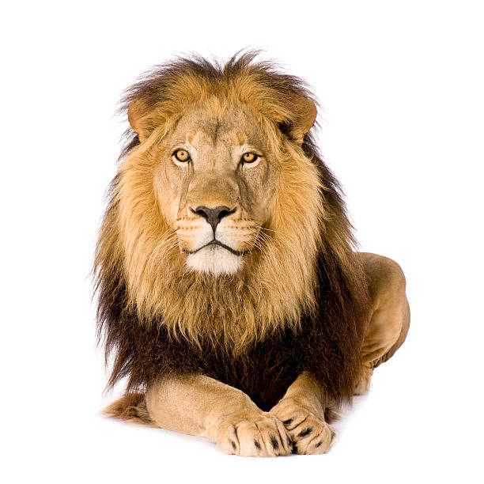

DIFFERENT ANIMALS
RABBIT
Rabbits are small mammals in the family Leporidae (which also includes the hares), which is in the order Lagomorpha (which also includes pikas). The European rabbit, Oryctolagus cuniculus is the ancestor of the world's hundreds of breeds[1] of domestic rabbit

LION
The lion (Panthera leo) is a large cat of the genus Panthera, native to Africa and India. It has a muscular, broad-chested body; a short, rounded head; round ears; and a hairy tuft at the end of its tail. It is sexually dimorphic; adult male lions are larger than females and have a prominent mane. It is a social species, forming groups called prides
FOX
Foxes are small-to-medium-sized omnivorous mammals belonging to several genera of the family Canidae. They have a flattened skull; upright, triangular ears; a pointed, slightly upturned snout; and a long, bushy tail ("brush").